Version 2.4.0
Object Data Browser
A cross-platform object data browser with a Flutter interface, real desktop sidecar engines, Android and iOS support, endpoint profiles, transfers, inspection tools, and benchmark workflows.
Platforms
Windows, macOS, Linux, Android, and iOS builds share one Flutter shell.
Engines
Python, Go, Rust, Java, Android, and iOS backends follow a shared engine contract.
Workflows
Browse buckets, inspect objects, manage profiles, track tasks, and run S3 benchmarks.
What changed in 2.4.0
- Optional encryption, off by default: provider-side encryption for S3 and Azure uploads, and client-side vault encryption in the standard age format, with optional encryption of file and folder names.
- Encryption keys live in a passphrase-protected key file that can be backed up, moved to another device, or synced through a bucket you choose.
- Provider templates for 21 storage services, plus native Google Cloud Storage in the Python and Go desktop engines.
- Settings stay readable at larger UI scales and on narrow screens. Desktop Upload opens a menu beneath its button.
- Fixes for share links, uploads started before navigating, slow transfers, download retries and engine memory use.
Downloads
| macOS, Apple Silicon, 13+ | DMG | ad-hoc signed, not notarized |
|---|---|---|
| Windows x64 | MSI | unsigned |
| Windows ARM64 | MSI | unsigned |
| Android, arm64 | APK | signed with a debug certificate |
These are development builds (2.4.0 build 3). They were not tested against a live storage service. Linux packages remain in 2.3.3. Verification details.
Settings, before and after
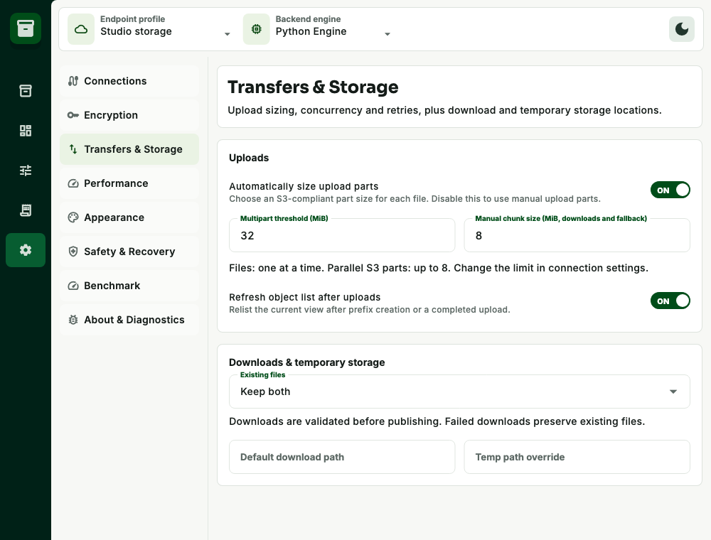
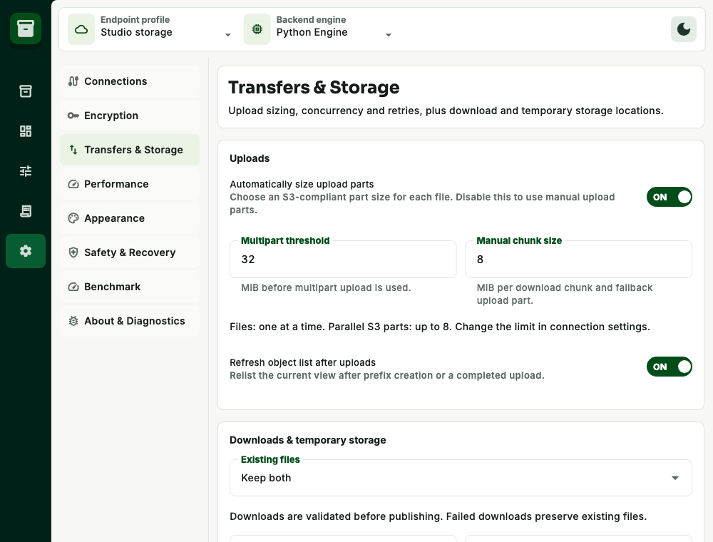
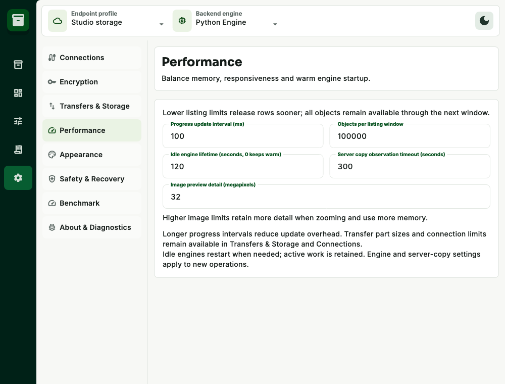
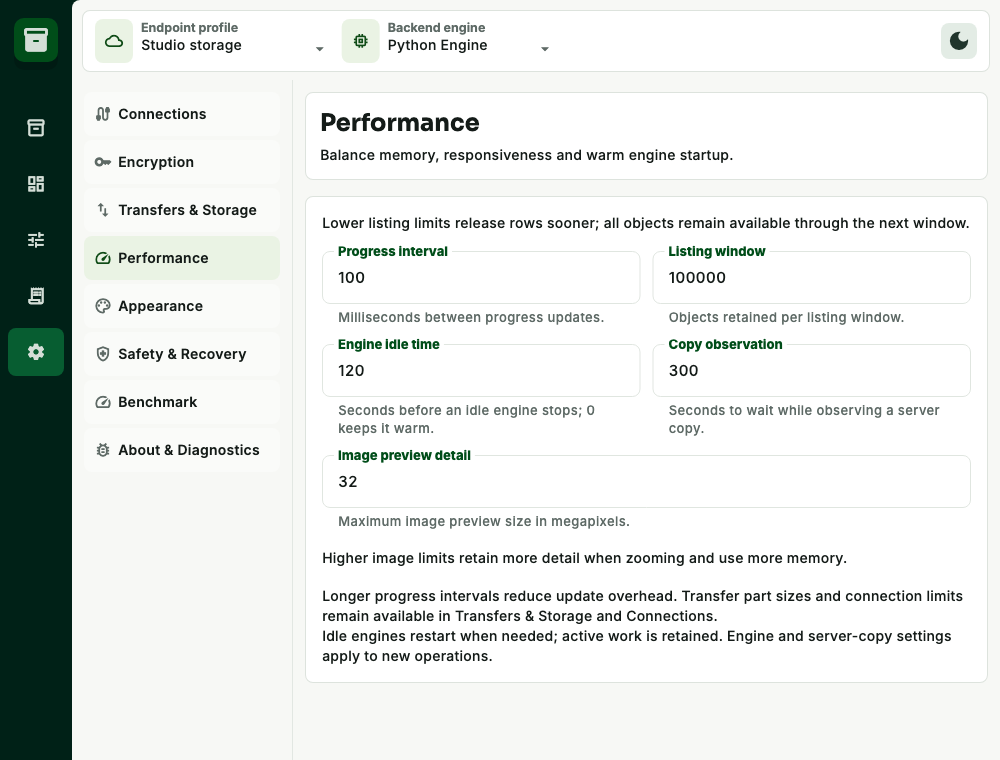
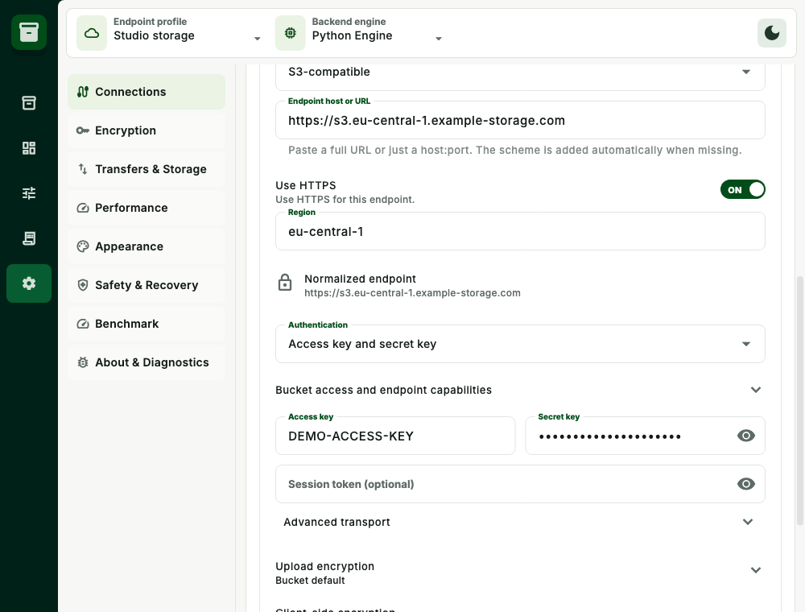
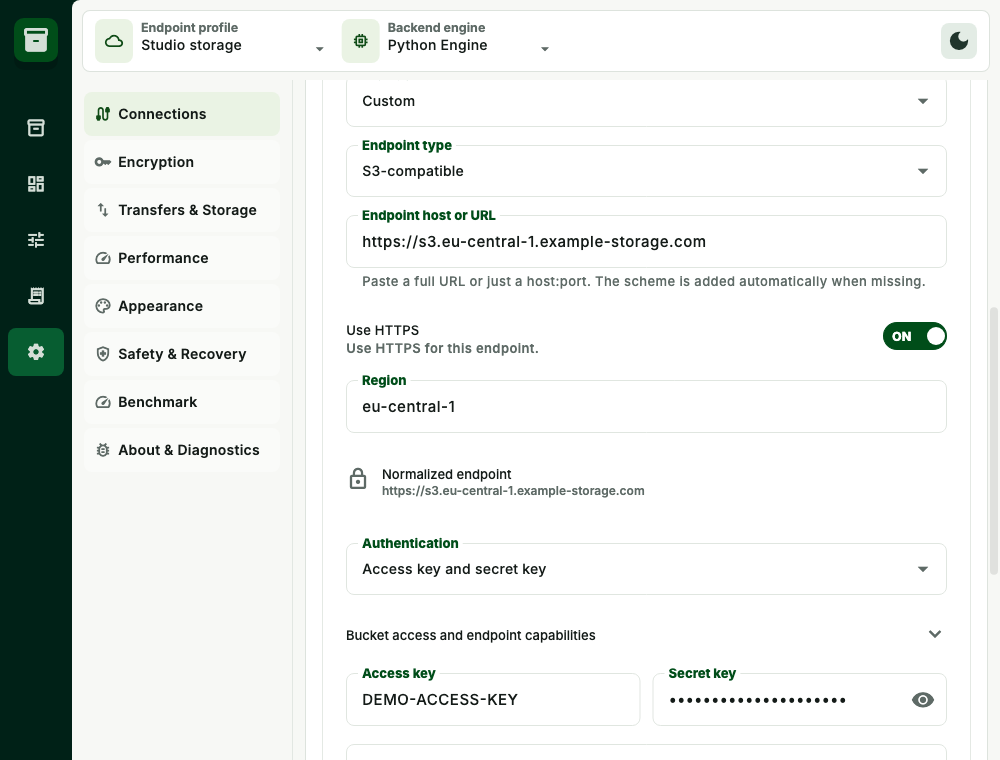
New in 2.4.0
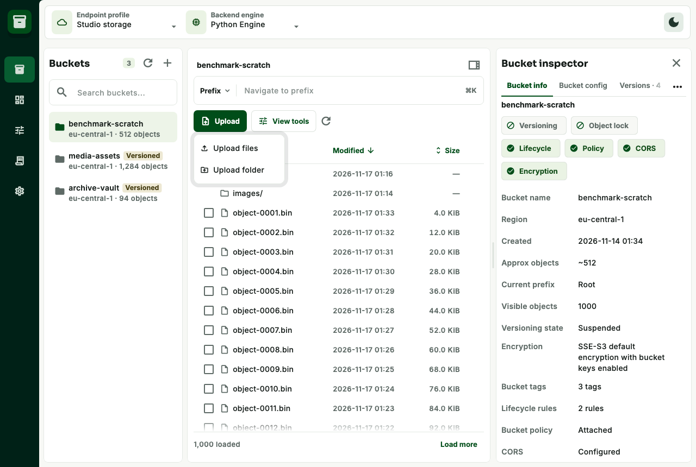
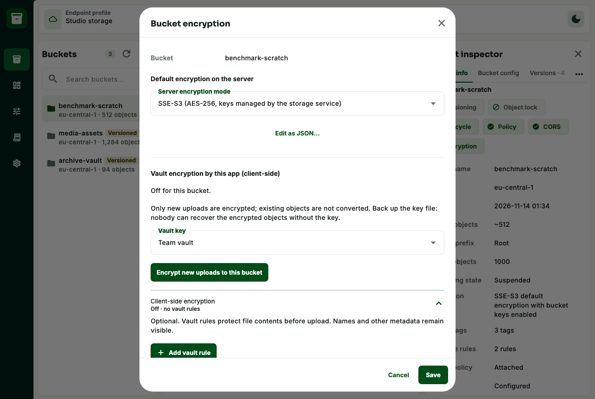
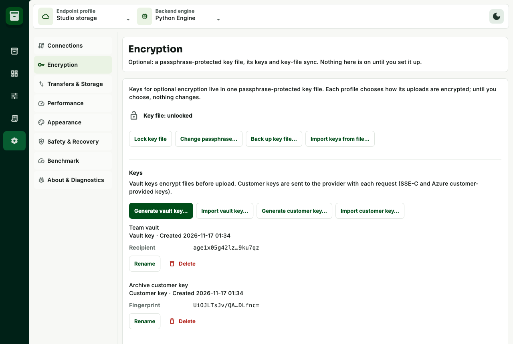
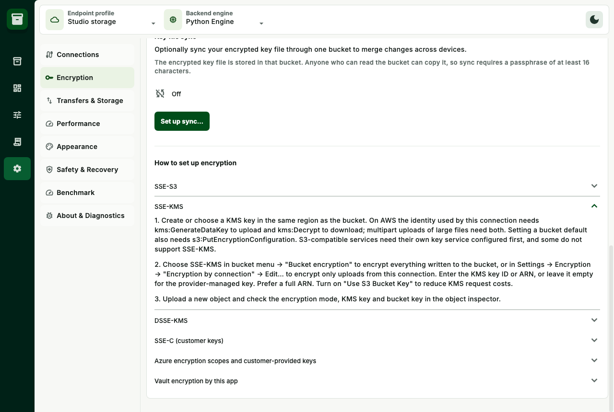
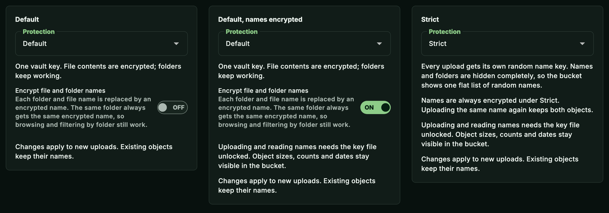
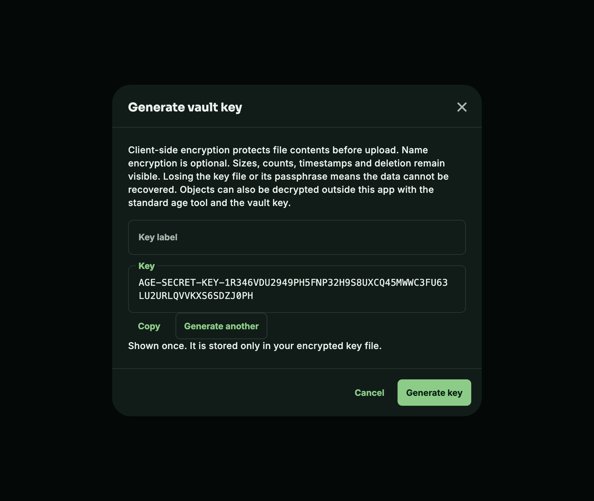